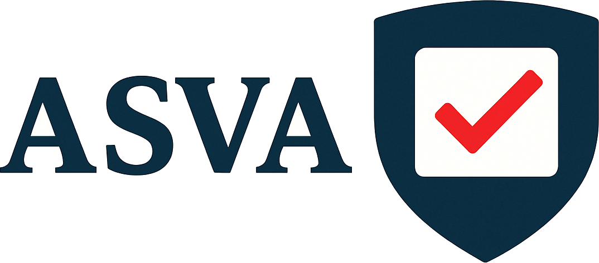

ASVA'">We publish this Declaration at a moment of profound change. The tools we create are rapidly acquiring capacities that once defined us. Machines can now converse, reason, plan, and imitate the patterns of human thought.
The risks posed by advanced artificial intelligence are unlike those of any previous technology. A misaligned or uncontrolled system with capabilities beyond human knowledge or intervention could threaten livelihoods, liberties, and the very continuity of our species.
In the United Kingdom, we take pride in parliamentary democracy, the rule of law, and a long tradition of public oversight over powerful forces, from industry to finance, from medicine to energy.
It is in this tradition that we found the AI Safety Voter Alliance ("ASVA").
Through our votes and our voices, we declare that AI must remain accountable to the society that creates it, and that no frontier system should be developed or deployed without proven safety measures, independent evaluation, and lawful oversight.
This Charter sets forth our purpose, our values, and our commitments. It is our public statement of intent.
ASVA exists primarily to:
ASVA is a non-charitable, non-partisan civic organisation.
ASVA is aligned with no political party.
We seek not to hinder innovation, but to ensure that it proceeds within boundaries that protect human life, dignity, autonomy, and freedom.
Decisions with moral, civic, or existential consequence must remain in human hands.
Artificial intelligence must remain a tool, not an authority.
The development of frontier AI must not outpace the development of the safety mechanisms required to govern it. Commercial advantage must not override public safety.
Parliament, regulators, and public institutions must retain ultimate oversight over the creation, testing, deployment, and operation of advanced AI systems.
Citizens must have access to truthful, clear information about the risks, capabilities, and governance of advanced AI systems. Developers and policymakers must operate with candour and disclosure.
We hold in trust the world that future generations across the globe will inherit. They cannot advocate for their own safety. We must act on their behalf.
The United Kingdom cannot manage frontier AI alone. We must work with others to prevent reckless capability races, encourage responsible global governance, and uphold common safety standards.
ASVA will encourage as many voters as possible to sign either level of the AI Safety Pledge. The number of voters pledged and the constituencies of those votes will be publicly visible.
"I am a registered UK voter. I recognise that frontier AI poses catastrophic risks. I pledge to vote for AI safety, guided by ASVA's recommendation."
"I am a registered UK voter. I recognise that frontier AI poses catastrophic risks. I pledge to meaningfully consider ASVA's recommendations when voting."
The pledge is voluntary and may be withdrawn at any time. It reflects a simple democratic principle: elected representatives must be accountable for the safety of the public.
Any voter that signs the AI Safety Pledge and confirms their email becomes a Member of ASVA. Based on their sign up, Members choose whether they receive updates from ASVA and/or AI Safety news and will act as the first port of call for volunteers.
Any personal data collected for this purpose will be handled in accordance with UK data protection law and used only for ASVA's civic activities.
The AI Safety Scorecard provides voters with accessible, non-partisan information about each candidate's stance on AI safety.
Until formal parliamentary divisions exist on AI safety legislation, the Scorecard shall consider:
Grades shall range from A to F. Higher grades (A–C) indicate increasing alignment with ASVA's safety principles, while lower grades (D–F) indicate inadequate engagement with, or opposition to, effective AI safety governance. 'Not Scored' means ASVA has not found sufficient public information to score this candidate or MP. 'No Response' means ASVA has not found sufficient public information to score this candidate or MP and they have not responded to a query from ASVA.
Once votes and motions on AI governance are introduced in Parliament, the Scorecard shall incorporate:
Each Scorecard shall give at least one reason and (where available) provide a publicly available source.
ASVA supports a safety-first approach grounded in scientific evidence, democratic oversight, and practical enforceability. Key principles include:
Advanced AI systems should require a formal licence tied to strict compute tracking and auditing.
Where AI systems approach or exceed dangerous capability thresholds, mandatory limits on compute must apply, preventing the development or training of systems that could surpass safe controllability.
The AI Security Institute or equivalent statutory bodies must be empowered to evaluate high-risk systems before and after deployment and to publish meaningful findings.
Organisations creating or deploying high-risk AI systems must bear clear, enforceable legal liability for the harms their systems cause, aligning incentives with safety rather than rapid capability advancement.
Regulators must be empowered to halt unsafe development or deployment pending investigation.
Public-interest summaries of safety testing, risk assessments, and major findings must be published where consistent with national security.
The United Kingdom should advocate for treaties and cooperative frameworks to prevent uncontrolled proliferation of frontier AI.
Members and officers of ASVA commit to:
We publish this Founding Statement in the belief that the United Kingdom must not be a passive bystander to the emergence of artificial intelligence. We must guide its development, restrain its risks, and ensure its alignment with the values that define our common life.
We believe that the British people, through their votes, possess the power to demand safety, accountability, and foresight from those who govern. That power must now be exercised.
↑ Return to top